What food scientists actually do when they test for safety
A plain-English breakdown of how food safety testing works from lab to label — written for IFST's public-facing channel.
Science communicator & visual storyteller
I translate science into stories that stick — through writing, video, and visuals. Currently communications officer at the Institute of Food Science and Technology. BSc Biological and Medicinal Chemistry. Always carrying a camera.
Writing, video, and science storytelling — translating research into content that reaches people who aren't scientists. I believe complexity is a design problem, not the audience's problem.
A plain-English breakdown of how food safety testing works from lab to label — written for IFST's public-facing channel.
Public-facing technical brief produced with IFST's scientific affairs team, translating regulatory and research language for general audiences.
On the difference between dumbing down and opening up — and why the most important skill in science communication is narrative, not jargon reduction.
Final year research project presented to faculty. Awarded best presentation. Script, visuals, and delivery designed to communicate remote sensing data to a non-specialist audience.
Primarily film — recently transitioning to digital with a Fujifilm XT5. Drawn to everyday moments, events, and the textures of the world at slower shutter speeds.
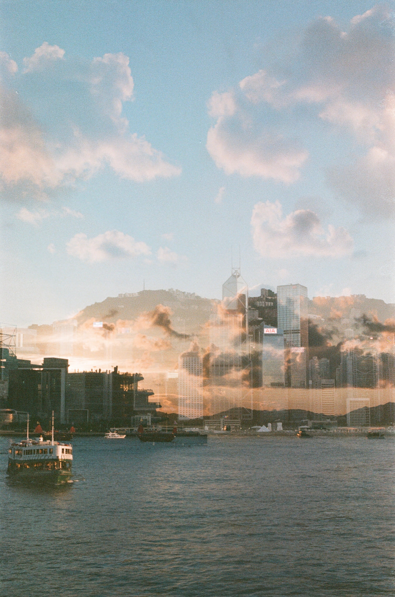
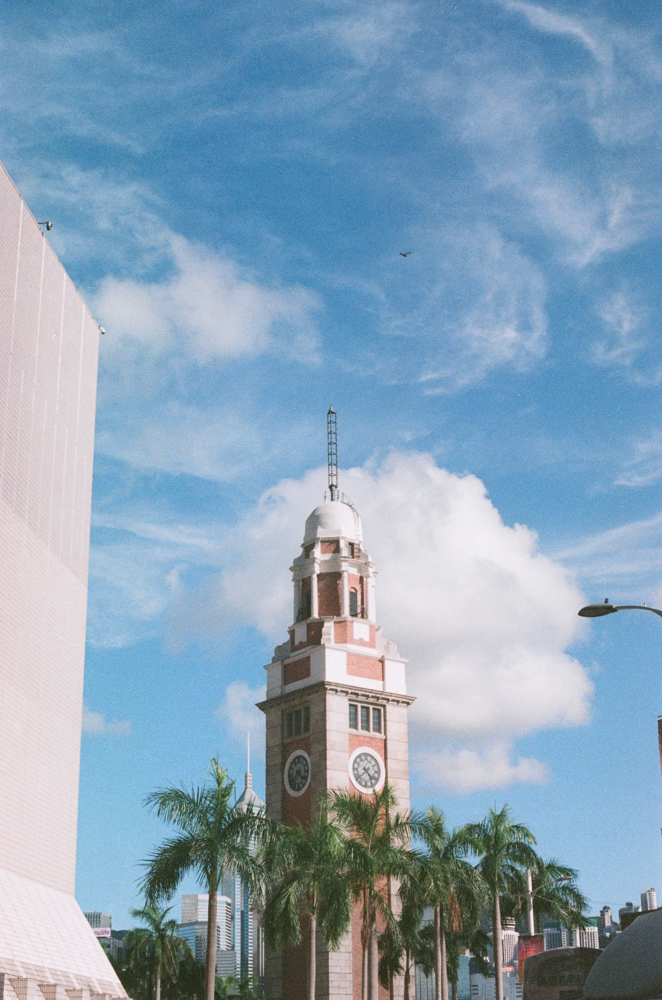
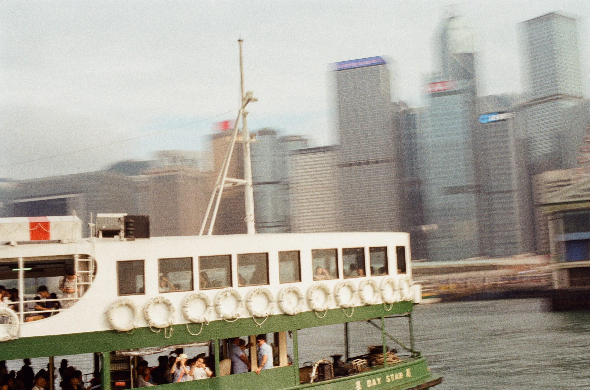
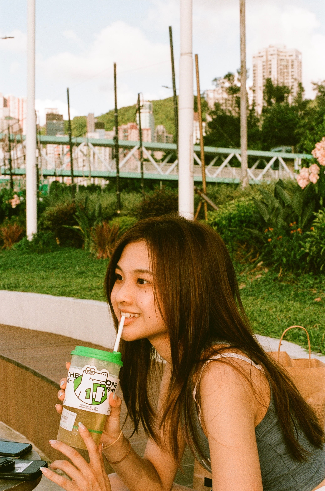
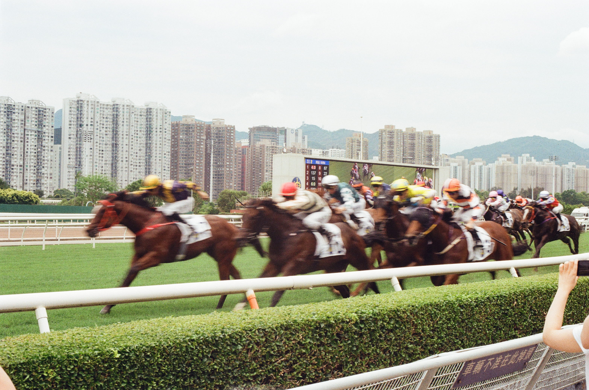
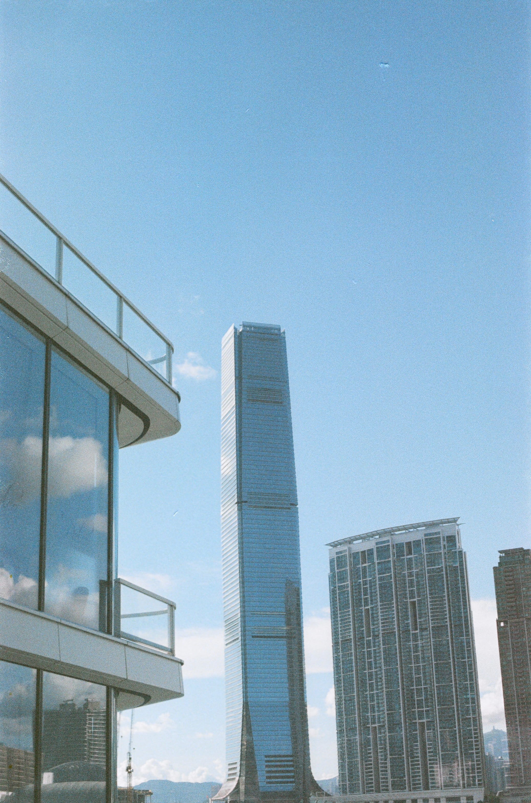
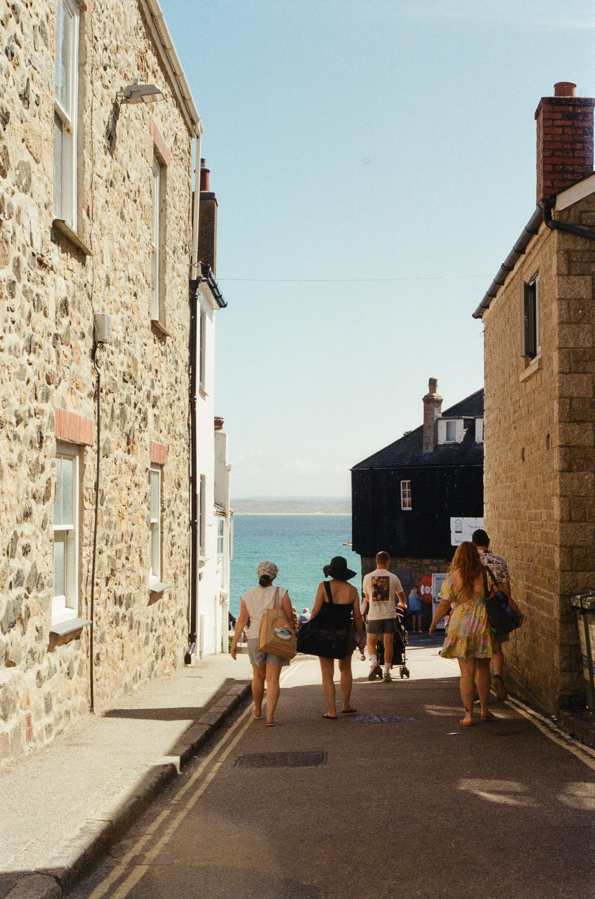
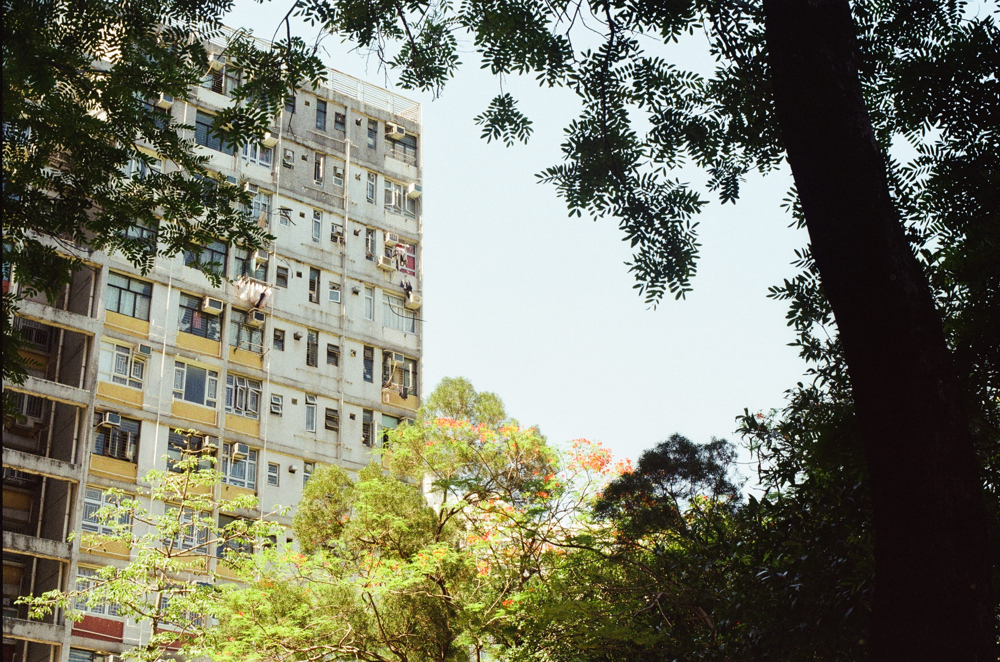
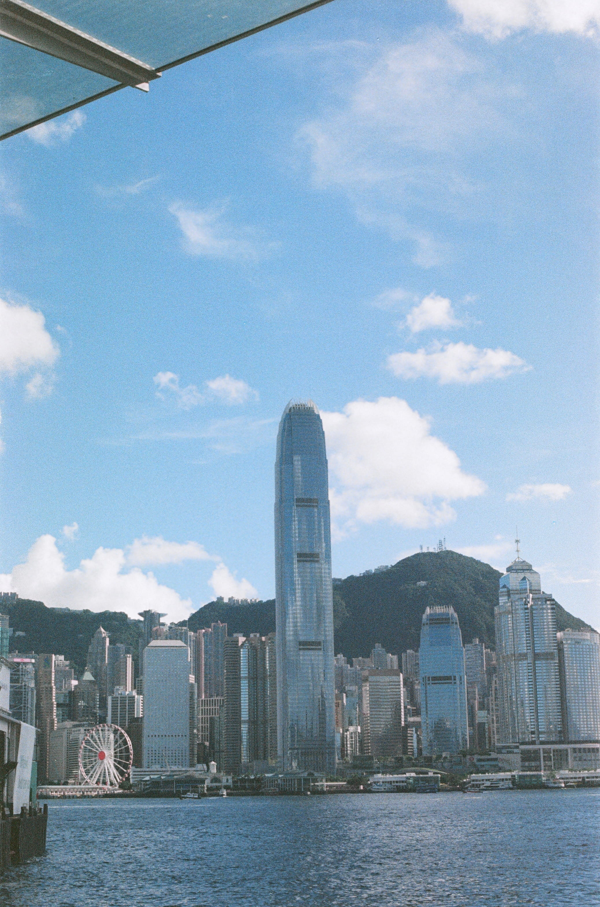
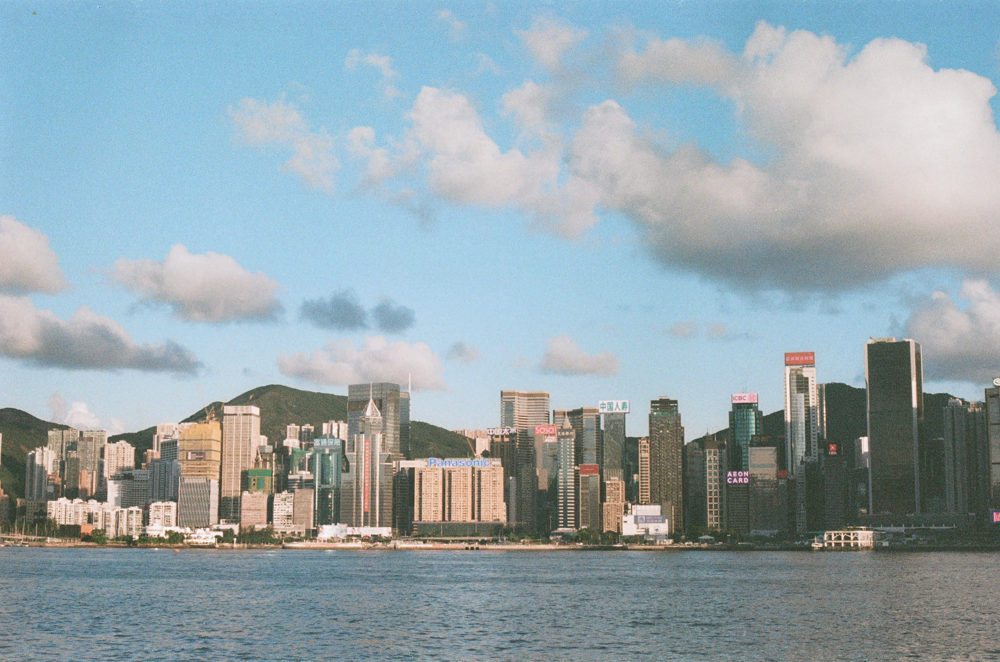
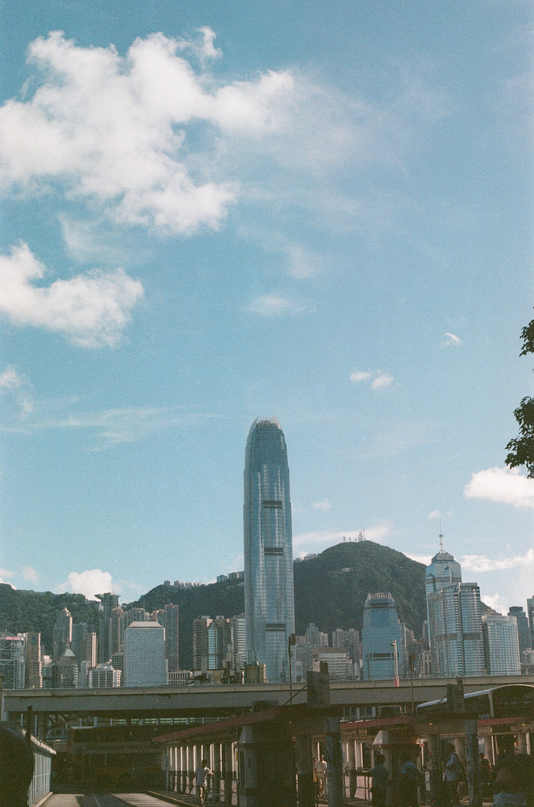
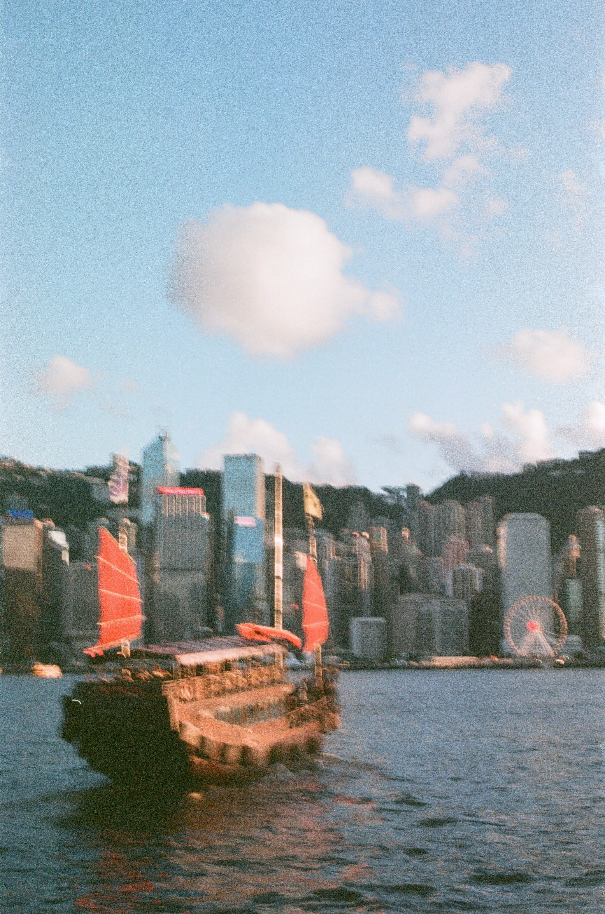
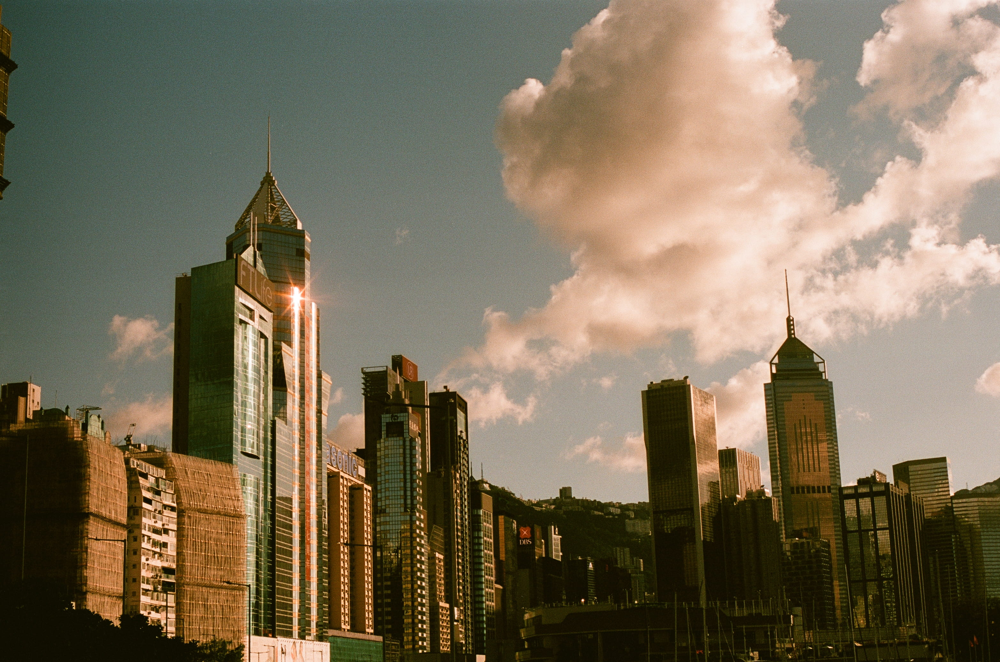
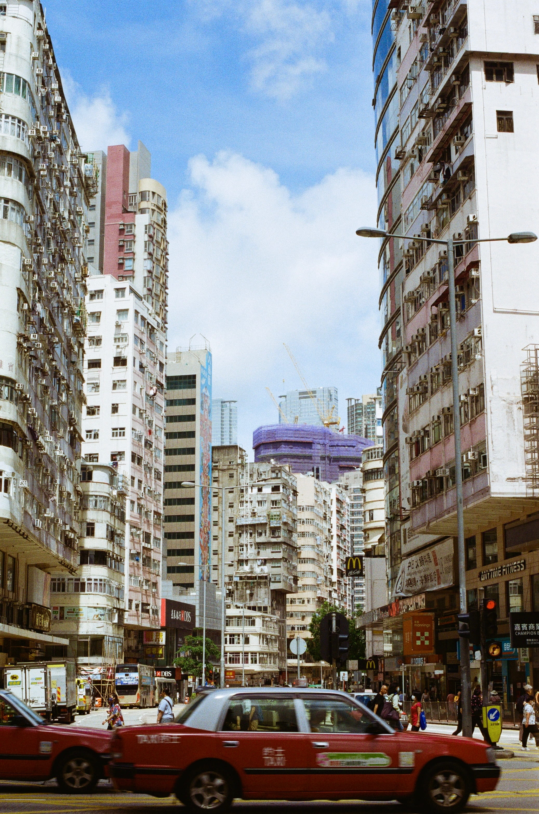


BSc Biological and Medicinal Chemistry graduate. I found science communication in my final year through a module that rang a bell — I'd been learning science through YouTube for years (ASAP Science, Veritasium) and suddenly realised that making that kind of content was a real thing people did.
Three months after graduating, I landed a communications officer role at the Institute of Food Science and Technology — a chartered professional body and charity. I've been building from there.
I believe the gap between science and the public isn't an intelligence problem — it's a storytelling problem. The evidence exists. The research is being done. What's missing is people who can translate it without losing the truth, the nuance, or the wonder.
Outside of work I'm usually behind a camera — film first, now also digital — or working out how to script a short science explainer that doesn't feel like a lecture.
Full content lifecycle — social media strategy, campaign visual identity (National Food Science & Technology Week), science translation with the scientific affairs team, Google Analytics reporting, and quarterly comms strategy.
Best presentation award for final year project on satellite monitoring of bushfires. Modules in science communication and decolonising medicine. Video project on science communication.
I take on freelance projects alongside my full-time role — particularly where science, storytelling, and visual craft overlap. Based in the UK.
Explainers, factsheets, social content, and articles for researchers, charities, and science organisations. I understand the research and can write for the people who don't.
Conferences, science events, community gatherings, and professional settings. Comfortable in technical and academic environments. Film or digital.
Event highlight reels, explainer video cuts, and social content. Clean, purposeful editing with an eye for pacing and narrative. No unnecessary transitions.
For project enquiries, collaborations, or just to say hello — reach out via email or LinkedIn. I try to respond within a couple of days.